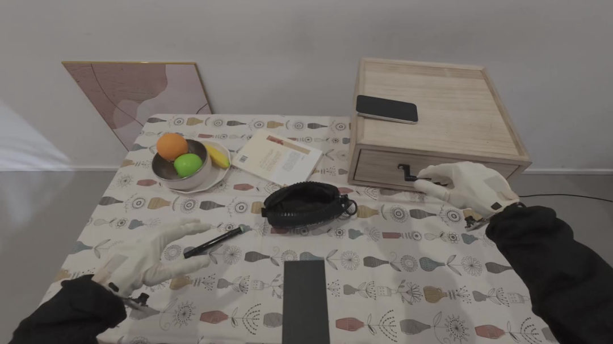

LiberAI／北京海淀 · 2025.12
一家成立不到一年的公司，10 个月融了 6 轮、超 10 亿元。创始人刘松铭是清华计算机系的 00 后在读博士。他们的判断是：具身模型泛化不了，不是因为数据不够多，是因为没学会「力是原因、运动是结果」。
刘松铭，清华计算机系在读博士，师从视频生成模型领域学者朱军教授。拿过清华本科生特等奖学金（每年仅 10 人），多年保持年级第一，在 ICML、NeurIPS 等顶会发过多篇一作论文。
但让投资人下注的不是这些头衔，是他创业前就交出来的东西：RDT-1B（2024）——全球首个用「大规模预训练 + 扩散 Transformer」范式的机器人基座模型，解决双臂操作的数据稀缺与多模态行为分布难题，比 Physical Intelligence 的 PI-0 早约三周。
2026 年又发布 RDT-2，是最早使用大规模 UMI（无本体人类数据）预训练范式的具身模型之一。
| 公司主体 | 北京将闲科技有限公司（LiberAI） |
| 成立时间 | 2025 年 12 月 8 日 |
| 地点 | 北京市海淀区 |
| 创始人 | 刘松铭 · 清华计算机系 00 后在读博士 |
| 技术路线 | 人类 UMI 数据 + 物理世界模型 |
| 代表性成果 | RDT-1B（2024）、RDT-2（2026）、Liber-0 Preview（2026） |
LiberAI 的判断是：当前具身模型泛化性不足的根源，在于缺乏对力和因果关系的建模。模型不理解「力是因、运动状态是果」，就没法像人一样完成精细的长程物理操作。
在这个判断之下，他们与主流路线做了两个区分：不靠纯视频生成，也不靠物理引擎，而是引入「模态对齐」与「归纳偏置」——用海量互联网视频的泛化性反哺稀缺的物理数据，同时把物理规律作为人类先验注入模型，加速收敛。
这是他们降采集成本的核心设计：不同层级的数据承担不同任务，规模逐层递减。
节奏值得注意：红杉中国从天使轮起四连投，真格基金从种子轮起累计三轮，顺为从天使+轮首次出手后迅速升任 Pre-A 领投方。同一批机构在极短时间内反复加注同一标的，在这个赛道里不常见。

2026 年 4 月，公司发布高自由度灵巧操作的具身基础模型技术 Demo——五指灵巧手完成双手剥香蕉、拧瓶盖、持锅颠勺这类精细长程操作。
9 月 17 日发布 Liber-0 Preview。官方把它定义为 World Action Model（WAM），预训练数据是 220 万小时人类经验。在 GPT-6 提出的 60 个随机任务、600 次试验中，总体成功率 36.0%；挑战性的多步 Non-PnP 任务 10.5%。此前在 RoboDojo 官方评测中位列第一。
需要说清楚的是：这是 Preview 版本。36.0% 的总体成功率，意味着三个任务里成一个；多步任务 10.5%——离可靠、可规模部署的通用灵巧操作还有明显距离。这一点公司自己在技术博客里也写明了。
目前已跑通 UMI 硬件 → 数据采集 → 大模型训练的全流程闭环。
研发分三条线：算法研究线（世界模型 / robot learning 预训练）、硬件落地线（机器人系统集成、真机部署、硬件调试）、数据线（世界模型训练数据）。其中硬件落地线正在从 0 搭班子。
岗位结构来自公开信息与客户访谈整理，具体职级、汇报线与薪酬带宽单独聊。